library(ggplot2)
library(dplyr)
# Read data and remove missing values
data <- read.csv('/Users/manoharshasappa/Desktop/Stat_Final_project de/CrashReportingDriversData.csv')
data <- na.omit(data)
# Convert Crash_Date to a Date format
data$Crash_Date <- as.Date(data$Crash.Date.Time, format = "%m/%d/%Y %I:%M:%S %p")
# Extract year from Crash_Date
data$Year <- format(data$Crash_Date, "%Y")
# Group the data by year and count the number of crashes
yearly_crash_count <- data %>%
group_by(Year) %>%
summarise(Num_Crashes = n())
# Provided data
yearly_crash_data <- data.frame(
Year = c("2015", "2016", "2017", "2018", "2019", "2020", "2021", "2022", "2023", "2024"),
Num_Crashes = c(20268, 21783, 21537, 21035, 20943, 13798, 16210, 17577, 18913, 7))
# Plot using ggplot2
plot1 = ggplot(yearly_crash_data, aes(x = Year, y = Num_Crashes)) +
geom_bar(stat = "identity", fill = "#1F78B4") + # Adjusted color
labs(title = "Crash Frequency per Year",
x = "Year",
y = "Number of Crashes") +
theme(axis.text.x = element_text(angle = 45, hjust = 1))
# plot1Final Project
Stat-515-002 (Spring 2024)
Group Number: 14
What is Project based on?
Our project revolves around a thorough examination of a dataset documenting motor vehicle collisions on county and local roadways within Montgomery County, Maryland. This dataset serves as the cornerstone for our investigation into the myriad factors that influence traffic accidents and their consequences. Through meticulous analysis and advanced statistical techniques, we aim to uncover insightful patterns and correlations that can inform proactive measures for enhancing road safety and mitigating accident risks.
In our endeavor, we transcend conventional data exploration by incorporating hypothesis testing and predictive modeling methodologies. By formulating and testing hypotheses pertaining to weather conditions, daylight, injury severity, vehicle types, distractions, and traffic control measures, we strive to unveil underlying relationships and trends within the data. Additionally, our predictive modeling efforts seek to anticipate injury severity and vehicle damage extent based on a diverse set of variables including collision type, vehicle movement, and speed limit. Through this comprehensive approach, our project aspires to deliver actionable insights that can empower stakeholders in making informed decisions aimed at fostering safer road environments and reducing the occurrence of motor vehicle collisions.
What’s our Goal?
Our goal is to deeply understand why and how motor vehicle collisions happen in Montgomery County, Maryland. By analyzing a vast amount of data on these accidents, we aim to uncover patterns, trends, and correlations that shed light on the factors contributing to crashes. Through this exploration, we seek to identify key variables such as weather conditions, road surfaces, vehicle types, and driver behaviors that play significant roles in accident occurrence and severity.
Ultimately, our aim is to use this knowledge to inform strategies and interventions that can enhance road safety and reduce the frequency and severity of motor vehicle collisions. By providing insights into the root causes and contributing factors of accidents, we aspire to empower policymakers, law enforcement agencies, and community stakeholders with the information they need to implement effective measures for preventing accidents and safeguarding lives on the roads of Montgomery County.
Research Questions :
Visualization1 : What are the trends in the frequency of car crashes over years?
Graph:
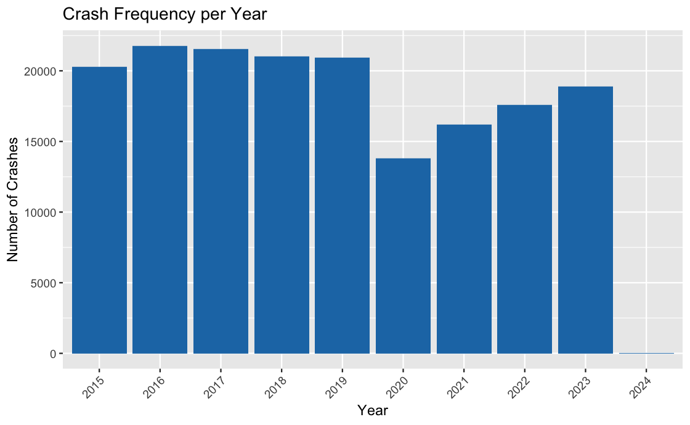
Code
Columns Used:
- Num_Crashes: This is the variable we are trying to understand or predict. It represents the number of crashes that occurred each year and is the primary focus of our analysis.
- Year: This is the predictor variable used to group the data. It represents the temporal aspect of the analysis, allowing us to observe how crash frequency changes over different years.
- Crash_Date: Though not explicitly used in this particular plot, Crash_Date could be considered a predictor variable in a more detailed analysis. It provides the specific date and time of each crash incident, which could be used to explore temporal patterns on a finer scale, such as monthly or daily trends. However, in this plot, it’s indirectly utilized to derive the Year variable.
Explanation of the Code: This visualizes the frequency of crashes per year using ggplot2 in R. Initially, it converts the “Crash_Date” column into a date format and extracts the year from it. Then, it groups the data by year and calculates the number of crashes that occurred each year.
hypo#4: Can we determine the effectiveness of different traffic control measures (Traffic.Control) in reducing collision rates? Which types of traffic controls are most effective in preventing collisions?
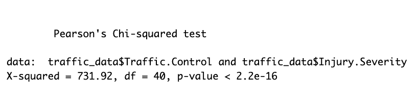
Interpretation of Results: To analyze this, a Pearson’s Chi-squared test was conducted between the types of traffic control measures and the severity of injuries resulting from collisions. The output shows a significant relationship between the two variables, with a very low p-value (p < 2.2e-16). This suggests that the effectiveness of traffic control measures in preventing collisions varies significantly across different types. However, further analysis would be needed to determine which specific types of traffic controls are most effective in reducing collision rates and severity of injuries.
Column used:
- Collision_Count: This variable represents the count of collisions for each type of traffic control. It is the response variable as it reflects the outcome of interest, i.e., the number of collisions categorized by the type of traffic control.
- Traffic.Control: This variable represents different types of traffic controls (e.g., stop sign, traffic signal). It serves as the predictor variable as it is used to categorize and group the collisions based on the type of traffic control present at the collision location.
Graph :
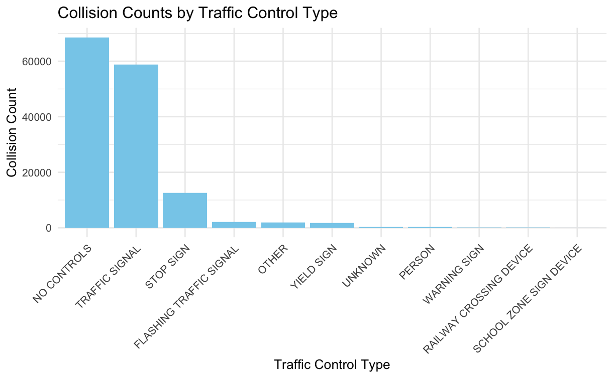
Code
# Subset the dataset to include only the required columns
traffic_data <- data[, c("Traffic.Control", "Injury.Severity")]
# Remove rows with any missing values
traffic_data <- na.omit(traffic_data)
library(ggplot2)
library(dplyr)
traffic_data[traffic_data == "N/A"] <- NA
# Remove rows with any missing values
traffic_data <- na.omit(traffic_data)
# Check if there are any missing values left
print(sum(is.na(traffic_data)))[1] 0collision_counts <- traffic_data %>%
group_by(Traffic.Control) %>%
summarise(Collision_Count = n())
# Calculate collision rates for each traffic control type
total_collisions <- nrow(traffic_data)
collision_rates <- collision_counts %>%
mutate(Collision_Rate = Collision_Count / total_collisions)
# Statistical Analysis
# Perform chi-square test to compare collision rates between different traffic controls
chi_square_test <- chisq.test(traffic_data$Traffic.Control, traffic_data$Injury.Severity)Warning in chisq.test(traffic_data$Traffic.Control,
traffic_data$Injury.Severity): Chi-squared approximation may be incorrect# print(chi_square_test)
# Visualization
# par(mfrow=c(1, 2)) # Set up a 1x2 plotting grid
# Create a bar plot using ggplot2
plot3 = ggplot(collision_counts, aes(x = reorder(Traffic.Control, -Collision_Count), y = Collision_Count)) +
geom_bar(stat = "identity", fill = "skyblue") +
labs(title = "Collision Counts by Traffic Control Type",
x = "Traffic Control Type",
y = "Collision Count") +
theme_minimal() +
theme(axis.text.x = element_text(angle = 45, hjust = 1))
# plot3Pre1# Can we predict the severity of injuries based on various factors such as weather conditions, road surface conditions, and collision type?
Predictor Variables: These are the factors or features used in a statistical model to predict or explain the outcome variable. In this context, “Weather,” “Surface.Condition,” and “Collision.Type” are predictors as they are hypothesized to influence the severity of crashes.
Response Variable: This is the outcome variable that the model aims to predict or explain. In this case, “Injury.Severity” represents the severity of injuries resulting from crashes. The model aims to understand how the predictor variables relate to the severity of injuries.
Data Pre Processing :
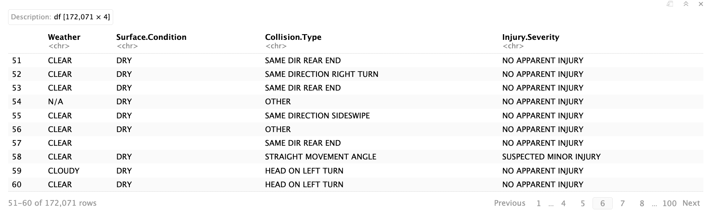
In this step, we are replacing character variables containing the text “N/A” with actual Null Values
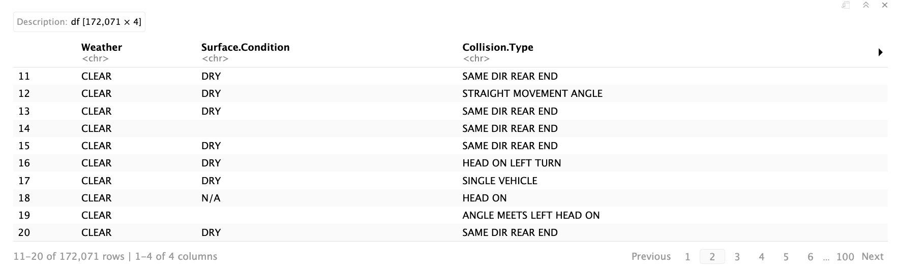
We’re replacing missing values with null values and then eliminating those null values from the dataset.
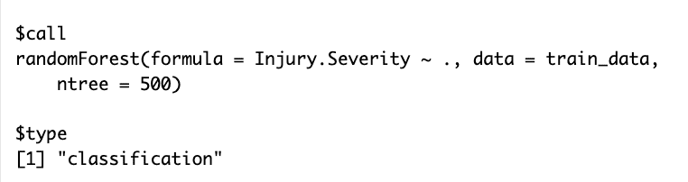
Accuracy :
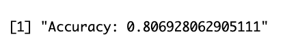
###kasdfdsf
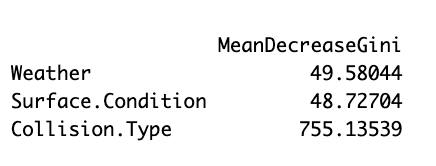
Variable importance plot:
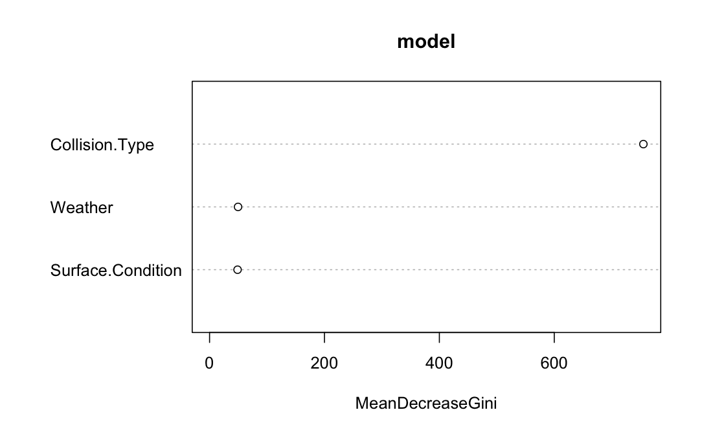
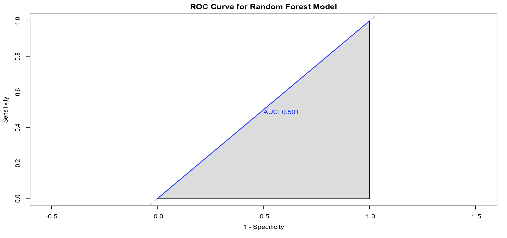
Model Evaluation & Improving:
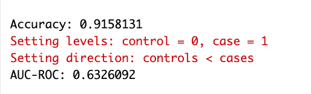
Graph :
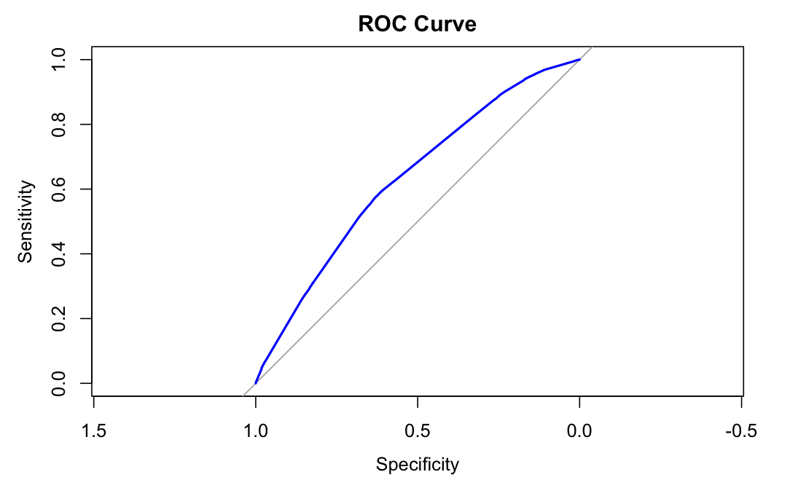
interpretation
Using logistic regression to make our model better means it’s getting better at guessing correctly and telling the difference between things. It’s like it’s learning to understand the data more accurately. So, when we see accuracy and AUC (another way to measure how good it is) going up, it’s a sign that our model is getting smarter and more reliable at its job.
Code
# Load required library
# library(randomForest)
# library(caret)
# Assuming your dataset is named 'data'
# Select relevant columns for modeling
# selected_cols <- c("Weather", "Surface.Condition", "Collision.Type", "Injury.Severity")
# Subset the data
# subset_data <- data[selected_cols]
# subset_data
# Remove rows with any missing values
# subset_data_clean <- subset_data[complete.cases(subset_data), ]
# subset_data_clean
# Convert 'N/A' strings to NA
# subset_data_clean[subset_data_clean == "N/A"] <- NA
# Remove rows with any missing values
# subset_data_clean <- na.omit(subset_data_clean)
# Check if there are any missing values left
# print(sum(is.na(subset_data_clean)))
# subset_data_clean
# Replace blank values with NA
# subset_data_clean[subset_data_clean == ""] <- NA
# Remove rows with any missing values
# subset_data_clean <- na.omit(subset_data_clean)
# Check if there are any missing values left
# print(sum(is.na(subset_data_clean)))
# subset_data_clean
# Convert all columns to factors
# subset_data_clean <- as.data.frame(lapply(subset_data_clean, as.factor))
# Verify the conversion
# str(subset_data_clean)
# Load required library
# library(randomForest)
# library(caret)
# str(subset_data_clean)
# Set seed for reproducibility
# set.seed(123)
# Split the data into training and testing sets
# train_indices <- createDataPartition(subset_data_clean$Injury.Severity, p = 0.8, list = FALSE)
# train_data <- subset_data_clean[train_indices, ]
# test_data <- subset_data_clean[-train_indices, ]
# train_data
# Fit random forest model
# model <- randomForest(Injury.Severity ~ ., data = train_data, ntree = 500)
# Print model summary
# print(model)
# Make predictions on the test set
# predictions <- predict(model, newdata = test_data)
# Create confusion matrix
# conf_matrix <- table(predictions, test_data$Injury.Severity)
# Calculate accuracy
# accuracy <- sum(diag(conf_matrix)) / sum(conf_matrix)
# Evaluate the model using confusion matrix
# conf_matrix <- table(test_data$Injury.Severity, predictions)
# Calculate accuracy
# accuracy <- sum(diag(conf_matrix)) / sum(conf_matrix)
# Print accuracy
# print(paste("Accuracy:", accuracy))
# importance(model)
# varImpPlot(model)
# Predict on the test set
# predictions <- predict(model, newdata = test_data)
# Confusion matrix
# conf_mat <- table(Actual = test_data$Injury.Severity, Predicted = predictions)
# print("Confusion Matrix:")
# print(conf_mat)
# Accuracy
# accuracy <- sum(diag(conf_mat)) / sum(conf_mat)
# print(paste("Accuracy:", accuracy))
# Precision
# precision <- diag(conf_mat) / colSums(conf_mat)
# print(paste("Precision:", precision))
# Recall (Sensitivity)
# recall <- diag(conf_mat) / rowSums(conf_mat)
# print(paste("Recall:", recall))
# F1-score
# f1_score <- 2 * (precision * recall) / (precision + recall)
# print(paste("F1-score:", f1_score))
# library(dplyr)
# Assuming your dataset is named 'crash_data'
# Select relevant columns for modeling
# selected_cols <- c("Weather", "Surface.Condition", "Collision.Type", "Injury.Severity")
# Subset the data
# crash_data1 <- data[selected_cols]
# Remove rows with any missing values
# crash_data1 <- crash_data1[complete.cases(crash_data1), ]
# crash_data1
# Convert 'N/A' strings to NA
# crash_data1[crash_data1 == "N/A"] <- NA
# Remove rows with any missing values
# crash_data1 <- na.omit(crash_data1)
# Check if there are any missing values left
# print(sum(is.na(crash_data1)))
# crash_data1
# Convert 'N/A' strings to NA
# crash_data1[crash_data1 == ""] <- NA
# Remove rows with any missing values
# crash_data1 <- na.omit(crash_data1)
# Check if there are any missing values left
# print(sum(is.na(crash_data1)))
# crash_data1
# crash_data1 <- crash_data1[, -which(names(crash_data1) == "Injury.Severity")]
# crash_data1
# logistic_model <- glm(Severe_Injury ~ ., data = crash_data1, family = binomial)
# summary(logistic_model)
# Extract coefficients and standard errors
# coefficients <- summary(logistic_model)$coefficients[, "Estimate"]
# standard_errors <- summary(logistic_model)$coefficients[, "Std. Error"]
# Predict probabilities using the logistic regression model
# predicted_probs <- predict(logistic_model, type = "response")
# Convert probabilities to predicted classes
# predicted_classes <- ifelse(predicted_probs > 0.5, 1, 0)
# Actual classes
# actual_classes <- crash_data1$Severe_Injury
# Accuracy
# accuracy <- mean(predicted_classes == actual_classes)
# cat("Accuracy:", accuracy, "\n")
# AUC-ROC
# library(pROC)
# roc_obj <- roc(actual_classes, predicted_probs)
# auc_roc <- auc(roc_obj)
# cat("AUC-ROC:", auc_roc, "\n")
# Install and load the pROC package if you haven't already
# library(pROC)
# Assuming 'predicted_probs' contains the predicted probabilities and 'actual_classes' contains the actual classes (0 or 1)
# roc_obj <- roc(actual_classes, predicted_probs)
# Plot ROC curve
# plot(roc_obj, main = "ROC Curve", col = "blue")
# Add text with AUC value
# text(0.8, 0.2, paste("AUC =", round(auc(roc_obj), 4)), col = "blue")#per#3: Find the locations of crashes using the K-means algorithm?
First, we import some tools we need, like ggplot2 for making graphs and dplyr for managing data. Next, We pick out the latitude and longitude data from our dataset. This helps us group locations based on where they are.
We adjust the data so it’s all on the same scale. This helps us compare things more easily. It’s like making sure all the ingredients for a recipe are measured in the same units.
We try out different numbers of clusters to see which one works best. Think of it like trying to find the best number of groups for organizing your things. We use a method called the “elbow method” to help us decide.
Graph: Elbow Method - K means
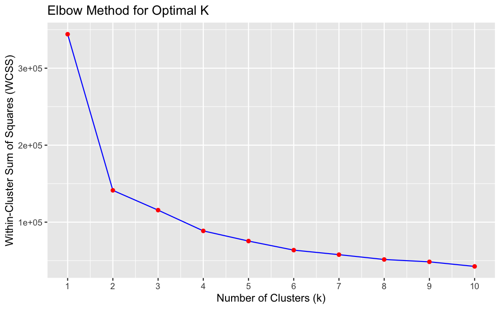
The elbow method suggests that the optimal number of clusters is 2, it means that adding more clusters doesn’t significantly improve the clustering quality, and two clusters are sufficient to capture the main patterns in the data effectively.
Graph :
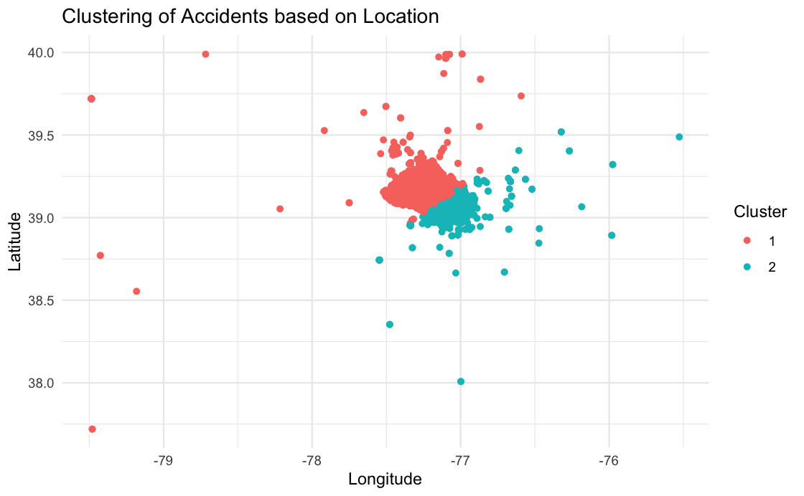
Once we figure out that two clusters are best for our data, we use a method called K-Means to group similar points together. It’s like sorting marbles into different colored bags based on how close they are to each other.
Then, we tag each point with the cluster it belongs to. This lets us study and show which accidents are in which group.
Lastly, we make a picture showing all the accident spots. Each spot is colored according to its cluster, so we can see how they’re grouped together on a map. It helps us see patterns in where accidents happen.
The two clusters represent two distinct geographical regions or patterns of accidents within the dataset. Red cluster might represent areas with high accident density, while the other cluster might represent areas with lower accident frequency.
Code
# Load required libraries
#library(ggplot2)
#library(dplyr)
# Assuming your dataset is called 'location_data' and contains columns 'Latitude' and 'Longitude'
# Select latitude and longitude columns
#location_data <- data %>% select(Latitude, Longitude)
# Normalize data
#normalized_data <- scale(location_data)
# Initialize vector to store within-cluster sum of squares (WCSS)
#wcss <- vector()
# Iterate over different values of k
#for (i in 1:10) {
# Apply K-Means algorithm
# kmeans_model <- kmeans(normalized_data, centers = i)
#Store within-cluster sum of squares (WCSS)
# wcss[i] <- kmeans_model$tot.withinss}
# Plot the elbow curve
#plot4 = elbow_plot <- ggplot(data = data.frame(k = 1:10, WCSS = wcss), aes(x = k, y = WCSS)) +
#geom_line(color = "blue") +
#geom_point(color = "red") +
#labs(title = "Elbow Method for Optimal K",
# x = "Number of Clusters (k)",
# y = "Within-Cluster Sum of Squares (WCSS)") +
#scale_x_continuous(breaks = 1:10)
# plot4#library(stats)
#library(ggplot2)
# Numerical columns for clustering
#numerical_cols <- c("Latitude", "Longitude")
# Subset the data with only numerical columns
#numerical_data <- data[, numerical_cols]
# Standardizing numerical data
#scaled_data <- scale(numerical_data)
# Determine the optimal number of clusters based on the elbow method
#num_clusters <- 2
# Perform k-means clustering with the chosen number of clusters
#kmeans_model <- kmeans(scaled_data, centers = num_clusters)
# Add cluster labels to the original dataset
#data$Cluster <- as.factor(kmeans_model$cluster)
# Visualize the clusters
#plot5 = ggplot(data = data, aes(x = Longitude, y = Latitude, color = Cluster)) +
#geom_point() +
#labs(title = "Clustering of Accidents based on Location") +
#theme_minimal()
#plot5Some More Questions
## hypo#1. is there any relation between weather condition, day light on injury severity
#This test performs provided performs a chi-square test to determine whether there is a statistically significant association between weather condition, light condition, on injury severity, Here's an explanation of why this test was conducted and what was observed:
#1. **Weather and Light**: This part of the analysis explores whether there's a relationship between weather conditions (e.g., clear, rainy, snowy) and light conditions (e.g., daylight, dark with street lights, dark without street lights). For instance, the test can indicate whether certain weather conditions are more likely to occur in conjunction with specific light conditions. A significant result suggests that weather and light conditions are not independent of each other.
#**Chi-Square Test**: The chi-square test is a statistical test used to determine whether there is a significant association between two categorical variables. In this case, the variables of interest are weather condition, light condition.
#**Observation**: By analyzing the contingency table generated from the data, which shows the frequency distribution of the combinations of weather condition, light condition, we can observe the following:
#- The contingency table provides counts of the number of accidents for each combination of weather condition, light condition.
#- The chi-square test is then applied to assess whether these variables are independent of each other or if there is a relationship between them.
# Contingency table of Weather, Light, and Injury Severity
#contingency_table <- table(data$Weather, data$Light, data$Injury.Severity)
# Remove any empty dimensions
#contingency_table <- margin.table(contingency_table, c(1, 2))
# Chi-square test of independence
#chi_square_test <- chisq.test(contingency_table)
# Print the test results
#print(chi_square_test)
#**Interpretation of Results**: To analyze this, a Pearson's Chi-squared test was conducted on the contingency table. The output indicates a significant relationship between these variables, with a very low p-value (p \< 2.2e-16). This suggests that the observed frequencies of injury severity across different weather conditions and daylight statuses are unlikely to have occurred by chance alone, indicating a strong association between these factors.## visualization3 : Top 10 cars which involve in car cashes?
#vehicle_counts <- data %>%
#group_by(Vehicle.Make) %>%
#summarise(count = n()) %>%
#arrange(desc(count)) # Sort by count in descending order
# Take the top N most common vehicle makes for better visualization
#top_n <- 10 # You can adjust this value as needed
#top_vehicle_counts <- vehicle_counts %>%
#top_n(top_n, count)
#plot2 = ggplot(top_vehicle_counts, aes(x = reorder(Vehicle.Make, count), y = count)) +
#geom_bar(stat = "identity", fill = "blue") + # Stacked bar plot with blue color
#labs(title = "Top 10 Most Common Vehicle Makes in Accidents",
#x = "Vehicle Make",
#y = "Number of Accidents") +
#theme(axis.text.x = element_text(angle = 45, hjust = 1),
# axis.text = element_text(size = 14)) + # Adjust text size
#coord_flip() + # Flip x and y axis
#ylim(0, max(top_vehicle_counts$count) * 1.1)
# plot2
### Columns Used :
#- count: This variable represents the number of accidents associated with each vehicle make. It is the variable of interest that we are analyzing and visualizing in the plot.
#- Vehicle.Make: This variable represents the make or manufacturer of the vehicles involved in accidents. It serves as the predictor variable in this analysis, as it is used to group the data and determine the count of accidents for each vehicle make.
#**Explanation of the Code:** This generates a bar plot showing the top 10 most common vehicle makes involved in accidents, with vehicle make names on the y-axis and the number of accidents on the x-axis. It uses dplyr to summarize and arrange the data, then ggplot2 for visualization.## hypo#2. Are certain types of vehicles more likely to be involved in collisions at night compared to during the day?
# The code aims to determine whether certain types of vehicles are more likely to be involved in collisions at night compared to during the day. Here's a clear interpretation of the analysis:
# 1. **Daylight Collisions**: This subset represents collisions that occurred during daylight hours.
# 2. **Nighttime Collisions with Lights On**: This subset represents collisions that occurred at night with lights on.
# **Chi-Square Test**: A chi-square test of independence is performed to assess whether there is a significant association between vehicle types and the time of the collision (day or night).
# Subset data for collisions during the day and at night
#collisions_day <- subset(data, Light == "DAYLIGHT")
#collisions_night <- subset(data, Light == "DARK LIGHTS ON")
# Get the counts of each vehicle type for day and night collisions
#counts_day <- table(collisions_day$Vehicle.Body.Type)
#counts_night <- table(collisions_night$Vehicle.Body.Type)
# Perform chi-square test of independence
#chi_square_test <- chisq.test(counts_day, counts_night)
# Print the test results
# print(chi_square_test)
#**Interpretation of Results**: To analyze this, a Pearson's Chi-squared test was conducted comparing the counts of collisions involving different types of vehicles during the day and at night. The output indicates that there is no significant difference in the distribution of collisions across different types of vehicles between day and night, with a p-value of 0.2408. This suggests that the likelihood of different types of vehicles being involved in collisions is similar during both day and night.## hypo#3. Do drivers distracted by electronic devices have a higher rate of collisions compared to drivers distracted by other factors?
#The analysis aims to determine whether drivers distracted by electronic devices have a higher rate of collisions compared to drivers distracted by other factors. Here's a clear interpretation of the results:
#1. **Driver.Distracted.By**: This variable indicates the factor(s) distracting the driver at the time of the collision. In this analysis, it's used to differentiate between collisions involving electronic device distractions and those involving other distractions.
#2. **Collision Counts by Distraction Type**:
#- **counts_electronic**: This represents the count of collisions where the driver was distracted by electronic devices.
#- **counts_other**: This represents the count of collisions where the driver was distracted by factors other than electronic devices.
# **Chi-Square Test**: A chi-square test of independence is performed to assess whether there is a significant difference in collision rates between the two groups of drivers.
# Subset the data for drivers distracted by electronic devices
#electronic_distracted <- subset(data, Driver.Distracted.By == "ELECTRONIC DEVICE")
# Subset the data for drivers distracted by other factors
#other_distracted <- subset(data, Driver.Distracted.By != "ELECTRONIC DEVICE" & Driver.Distracted.By != "NOT DISTRACTED")
# Count the number of collisions for each distraction type
#counts_electronic <- nrow(electronic_distracted)
#counts_other <- nrow(other_distracted)
# Perform chi-square test
# chi_square_test <- chisq.test(c(counts_electronic, counts_other))
# Print the test results
# print(chi_square_test)
#**Interpretation of Results**: The question aims to determine if drivers distracted by electronic devices have a higher collision rate compared to those distracted by other factors. To analyze this, a Chi-squared test was conducted comparing the collision counts between drivers distracted by electronic devices and those distracted by other factors. The output indicates a significant difference between the two groups, with a very low p-value (p \< 2.2e-16). This suggests that drivers distracted by electronic devices indeed have a significantly higher collision rate compared to those distracted by other factors.## visualization2 : How does the distribution of car accidents vary geographically?
# library(leaflet)
#data <- read.csv('/Users/manoharshasappa/Desktop/Stat_Final_project de/CrashReportingDriversData.csv')
#data <- na.omit(data)
#map <- leaflet(data) %>%
#addTiles() %>%
#addCircleMarkers(
#lng = ~Longitude,
#lat = ~Latitude,
#popup = ~as.character(Report.Number),
#label = ~as.character(Report.Number))
# Print the map
# map
# - Latitude and Longitude: These variables represent the geographical coordinates of the crash locations. They serve as predictor variables as they are used to specify the locations where circle markers will be placed on the map.
# **Explanation of the Code:** This utilizes the Leaflet package in R to generate an interactive map. It begins by loading Leaflet and then initializes a map object. Using latitude and longitude data from a dataframe named 'data', it places circle markers on the map to represent specific locations, like crash sites. Each marker includes a popup and label showing the associated report number. Finally, it prints the interactive map, allowing users to explore the locations and corresponding report numbers within the R environment.